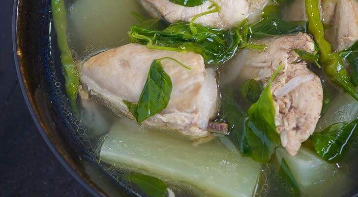

Chicken Tinola

Description
Chicken Tinola is a Filipino soup dish. It involves cooking chicken pieces in ginger broth. It is a popular cold weather dish. I always feel warm and cozy every time I eat it. This Filipino Chicken Soup is best enjoyed with fish sauce as dipping sauce, and a cup of warm white rice.
Ingredients
- 3 lbs. chicken, cut into serving pieces
- 2 green papaya, wedged
- 1 ½ cup malunggay leaves
- 1 cup hot pepper leaves
- 5 cloves garlic, crushed and chopped
- 1 onions, chopped
- 3 thumbs ginger, julienned
- 2 Maggi Magic Chicken Cubes
- 1 quart rice wash
- 1 quart water
- 2 tablespoons fish sauce
- Ground black pepper to taste (optional)
- 3 tablespoons cooking oil
Steps
- Sauté the aromatics
- Brown the chicken
- Add seasoning and rice wash
- cook the green papaya
- Add greens, season, and serve!